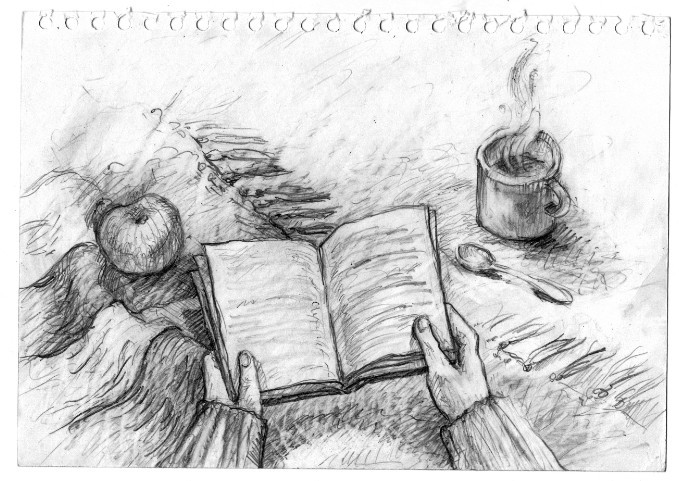
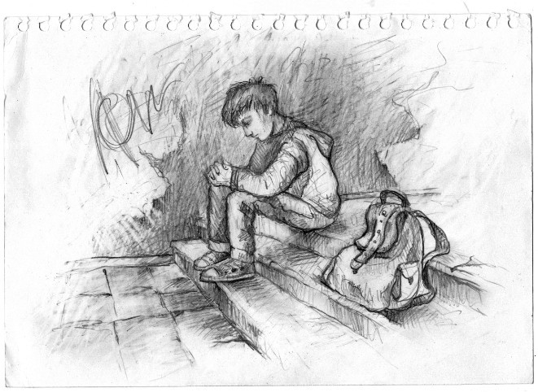
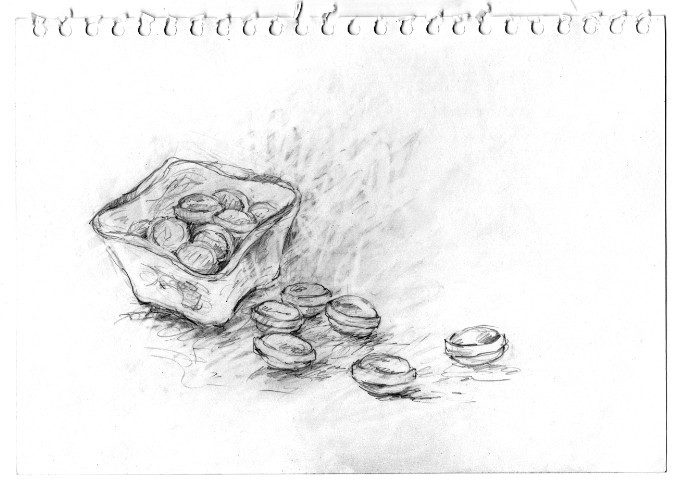
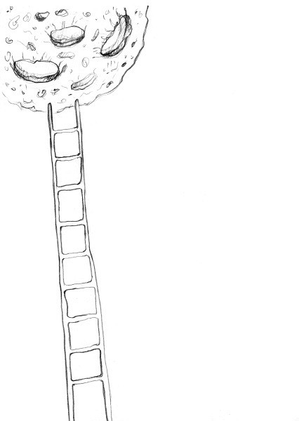
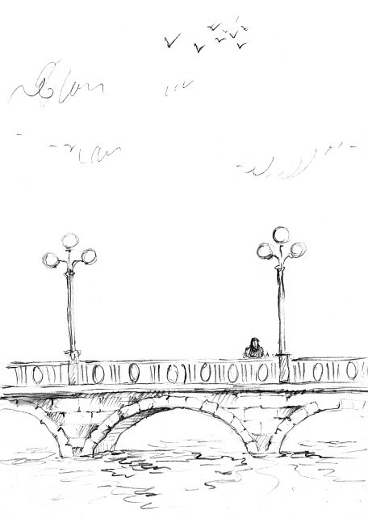

Привет, дружок! Я очень рад, что ты нашел время прочитать мою историю. Постараюсь быть кратким, но максимально точным во всех деталях… Все началось еще много лет назад… Одиночество преследует меня с самого рождения. Интересно, что чувствует крошечный ребенок, когда родители оставляют его у порога детдома, нажимают на кнопку звонка и уходят в темноту? Сотрудники детдома называют ее «кнопкой подлецов». (Это я узнал позже, когда мне было 13 лет.) А тогда я просто лежал и смотрел в небо: мне всего три месяца, и весь мир такой большой и пугающий… Прошло совсем немного времени, но мне пришлось смириться: справедливости в мире нет. Из собственных вещей – только шкафчик у двухъярусной кровати, а шрамы на коленях напоминают, как мне не хватает мамы. Я никак не мог понять, почему меня бросили и в чем я так успел провиниться? Каждый день в течение десяти лет я задавался этим вопросом. Представляешь, как повлияли на меня все эти годы, проведенные в этом месте? Все жили по одному графику: завтрак, уроки, обед, прогулка, тихий час, чтение, ужин, сон. Но были и дни, когда кого-то из нас забирали: приходили счастливые пары, сочувствовали всем детям, но всегда выбирали самых красивых и милых малышей. «Будто мы на собачьей выставке», – думал я. И однажды мне посчастливилось познакомиться с мистером Джеком. Я запомнил тот день на всю жизнь. За окном валил снег, была сильная метель. Никого из нас не выпускали на улицу, да, впрочем, никто и не хотел выходить. Еще днем электрические провода оборвал ветер. В приюте было темно и ужасно холодно. Около восьми вечера мы собрались в общей комнате и сели пить чай на большом бордовом ковре. Да, уселись прямо на пол, с кружками в руках, завернувшись в самые теплые вещи, какие только у нас были. И только крохотная лампа в центре комнаты служила слабым источником света. Наша воспитательница, мадам Илона, – пожилая женщина, укутанная серым вязаным платком, – сидела в кресле в центре и в полумраке читала нам сказку, название которой я уже и не вспомню. Но по сей день удивляюсь, как в такой темноте она умудрялась нам что-то читать. Она очень нас любила и, кажется, делала вид, что читает, а сама на ходу придумывала новые сказки. Когда мадам Илона произнесла: «И только раз в несколько лет можно было наблюдать, как снегопад вперемешку со звездами делал счастливыми людей, находящихся в этом волшебном месте…», кто-то громко постучал. Все испуганно уставились на дверь. Постучали еще раз… Мадам Илона подошла к двери и, не спросив, кто к нам пожаловал, повернула ключ в замочной скважине. Дверь открылась, и в комнату подуло холодным ветром. Затем вошел мужчина, на вид лет двадцати пяти. Стряхнув снег со шляпы, он громко произнес: – Добрый вечер! – Джек! Я думала, ты уже никогда не вернешься! Мадам Илона крепко обняла его, как обнимают матери своих сыновей, когда отправляют их куда-то далеко-далеко, например, на войну. Мужчина улыбался, а мы продолжали глазеть, не очень понимая, кто именно к нам пришел. Он просто стоял и улыбался. Я тогда подумал, какой же он дурак: приперся в такую погоду и стоит, улыбается. Но вдруг он вышел и спустя пару минут вернулся с огромным ящиком, еле дотащив его до центра комнаты. Со словами «это всем» Джек поставил подарок перед нами и одним ловким движением открыл его. Там оказалось килограммов двадцать, а может, и больше, конфет. Незнакомец сел рядом с нами на пол и сказал: – Знаете, а ведь я и сам был таким же, как вы… Жил в этом паршивом детдоме до пятнадцати лет. Моя мать отказалась от меня, когда мне едва исполнилось пять… Только раньше здесь была очень злая повариха, которая постоянно заставляла всех съедать порцию противной каши до конца, – добавил он с ухмылкой. ...
Она вышла из битком набитого автобуса. Ей было душно в толпе незнакомых людей. «Пройдусь пешком», — подумала она. Было очень свежо — прохладный сентябрь. Девушка шагала по тропинке с опавшей листвой, аккуратно обходя лужи. Ветер дул ей в лицо. Уже несколько минут телефон разрывался от входящих сообщений. Она достала мобильный из коричневой кожаной сумки и прочитала: «Ты где?»; «Ты придешь?»; «Зои, не молчи!». Зои улыбнулась и набрала: «Почти приехала». Не успела она убрать телефон в сумку, как моментально пришел ответ: «Быстрее, тут такая толпа!». Эти сообщения приходили от подруги Зои, Мэри, шатенки двадцати двух лет, которая уговорила ее пойти вместе в театр. «Ненавижу толпу!..» — вздохнула про себя Зои. Она подошла к площади перед театром и увидела множество людей. Но это была не такая толпа, как в забитом автобусе, а совсем другая: веселая, шумная, все в предвкушении хорошего вечера. Прекрасно одетые мужчины в костюмах с красивыми спутницами в вечерних платьях. «Зои, Зои!» — помахала рукой Мэри, стоявшая у входа в театр. Она обняла подругу и с ходу затараторила: — У нас первый ряд, 14-е и15-е места. Это самые лучшие места в зале, я же тебе говорила! — Мэри, ты такая молодец, правда… — Я знаю. Можешь не говорить мне такие очевидные вещи… А может, сегодня мне удастся познакомить тебя с одним из красивых, умных, богатых молодых мужчин? Их, кстати, полно в этом зале… — Не начинай, пожалуйста, прошу тебя, — ответила Зои, презрительно поморщившись от ее предложения. …Мы прошли в холл, я развязала шарф, расстегнула пуговицы на пальто и встала в очередь в раздевалку. Мэри трещала без остановки что-то про богатых и красивых кавалеров, про мужчин в разводе. Через несколько минут мы были в зале. Места действительно оказались хорошие. …Большая заснеженная сцена. Новогодние декорации. «Очень уютно и одновременно торжественно», — промелькнуло в голове у Зои. Мэри строила глазки сидящему рядом австралийцу и что-то шептала ему. Заиграла музыка. Свет в зале приглушили, и на сцене появился бородатый старик с фонарем в руках. Освещая себе путь, он начал рассказывать легенду о волшебном снегопаде: если попасть в него, человек будет счастливым. Вскоре на сцену вышел странник, точнее, юноша лет двадцати, сбившийся с пути. Он заблудился — и, вероятно, не только по сценарию, на местности, но и в жизни. Оказавшись в кругу бездомных людей, он произнес: «Новый год — это лишь новые 365 поводов грустить!». Зои эти слова показались немного банальными, но его голос! Мурашки побежали по коже… Какой же теплый! Кажется, что этот голос в силах растопить даже лед. По сюжету выяснилось, что главный герой пьесы спорил с каким-то тайным обществом о смысле жизни. Тут мне стало наплевать на все вокруг, кроме Него. Я не слышала смеха зрителей и не замечала, как Мэри флиртует рядом с каким-то богачом. Я не могла оторвать взгляда от этого юноши на сцене. Почему он показался мне таким скромным и печальным? Всю жизнь я была твердо уверена, что влюбленность — это не коробка шоколадных конфет, купленная по пути на свидание. Это что-то большее… То, чего мне еще не показывала жизнь. Оказывается, все намного проще. И одновременно сложнее, потому что нет такого языка на земле, который способен передать это чувство… — Зои, рядом со мной сидит владелец «Ронзетто делириум», крупной сети ювелирных изделий в Австралии. Я познакомлю вас после спектакля, он предлагает с ним выпить, — шепнула Мэри. — Пожалуйста, помолчи, ты отвлекаешь, — раздраженно ответила я. Мэри презрительно отвернулась от меня. Закончился спектакль, а я не могла встать, настолько сильным было впечатление. Все аплодировали стоя. Потом толпа зрителей устремилась к выходу: кто в рестораны, кто домой, кто гулять дальше. А я села на диванчик в холле и разглядывала актеров, которые общались со зрителями, фотографировались, смеялись. ...
 Я уже проснулся и боялся, что не увижу ее, когда открою глаза. Но она была рядом и крепко спала. Очень тихо дышала и выглядела сейчас такой хрупкой. Я осторожно встал с постели и тихо вышел из комнаты, чтобы случайно не разбудить Зои. Начал готовить завтрак, но мысленно оставался с ней в постели, а мои вечно холодные руки.., я так хотел согреться рядом с нею! Кофе, несколько тостов – и вот я несу ей в постель поднос. Точнее – нам. Запах кофе разбудил ее, не успел я зайти в комнату. (Как в рекламе какого-то дешевого растворимого кофе). – Сколько времени? – промурлыкала Зои. – 18.30. – Я проспала весь день? – с испугом спросила она. – Мы проспали весь день, – сказал я, успокаивая ее. – Ты приготовил мне ужин? – Да, это ужин в постель. – А что у нас на ужин? – Тосты и кофе. – Со-о-о-йер, – протянула она. – Это самый романтичный ужин в моей жизни… – На самом деле, это очень поздний завтрак. А если ты хочешь поужинать, мы можем прогуляться в кафе на углу Чайного квартала. – Это случайно не там, где лавка сладостей Борли Минтла? – Именно там, напротив нее. – Нет, тогда точно не пойду, Сойер. Я слышала ужасные истории про этого человека. – Какие же? – со смешком спросил я. – Иди ко мне ближе, это очень страшная история… Я подвинулся к ней ближе, и она укутала меня одеялом. …Очень давно жил на свете одинокий человек, который однажды влюбился в прекрасную девушку, дочь богача, прекрасную Глорию Ротхен. Ее отец, Смит Ротхен, был владелец фабрики по изготовлению сладостей – в то время самой крупной фабрики в наших краях – и был настроен против их отношений. – Почему? – удивленно спросил я. – Потому что этот «одинокий человек» был его конкурентом, владеющим маленьким магазином сладостей. А ее отец считал, что он хочет использовать его дочь в своих корыстных целях. На самом деле, этот «одинокий человек» был по уши влюблен в его дочь. Он простой и добрый парень, который помогал беднякам, заботился о больных животных. Дома у него жили три ворона, у каждого из которых был «волшебный клюв», исполняющий желания, стоило только его хозяину что-либо попросить… Но это всего лишь легенда, а что было на самом деле – никто уже не помнит, наверняка… Так вот, однажды этот одинокий человек пришел домой и увидел, что у его двери, на веревках, висели головы трех его воронов, с обломанными клювами, а на двери кровью было написано: «Ты следующий». На другой день всю семью Ротхенов нашли мертвыми в собственных кроватях. Кроме Глории – ее больше никто никогда не видел... – Как ты думаешь, как зовут этого одинокого человека? – Неужто Борли Минтл? – Верно.., поговаривают, что в его подвале до сих пор живет в плену Глория Ротхен. – Я не верю, если бы это было правдой, он давно бы гнил в тюрьме! Был ли суд? Обыскивали его дом? – Сойер, это всего лишь сказка, страшная сказка... Но боюсь, что доля правды в этом есть. Несколько минут мы ели молча. Решили никуда не идти и опять заснули…
Кажется, тогда у нас дома закончилось все: сахар, чай, еда, салфетки – так долго мы не выходили из дома. Мы просто обнимались сутки напролет… Вы смогли бы пропасть на неделю из своей жизни? Просто вырваться, оставив дома включенным свет, приготовленный суп в холодильнике, может быть, даже открытым окно. Пусть там будет холодно… Бывает, что-то делаешь и не думаешь о последствиях, идешь в расстегнутом пальто по улице, даже когда на улице мороз, а потом лежишь неделю дома с температурой. Кажется, вот именно сейчас у меня была такая температура. Я заболела им и не была уверена, что существует лекарство, способное мне помочь. Я не хочу, чтобы тот вечер в театре заканчивался! Он длится уже, наверное, неделю. А может, дольше? С Сойером так быстро летит время… Глаза зеленого цвета и очень грустная улыбка. Я бы даже сказала, не зеленого, а изумрудного, как у драконов в сказках. А еще мы постоянно составляли «списки» – дурацкие и простые. Он сказал, что этому его научил отец. – Зои, знаешь, что я в тебе люблю? Твои руки, постоянно холодные... Греть их – одно удовольствие. Твои слова про то, что у тебя нет забот и дел и что тебя не интересует, включен ли чайник на кухне, и какой сейчас курс у валюты. Твои глаза. Твои руки. За то, что они так трепетно перебирают мои волосы, когда я читаю тебе вслух. Твою заботу… – А что тебе во мне не нравится? – с небольшой иронией в голосе спросила я. Сойер на минуту задумался и ответил: – Твои глаза. За то, что они такие грустные, когда мы молчим. На улице шел дождь, и мы не выползали из-под одеяла почти весь день…
Мы вышли из дома. Свежий, уже слегка морозный, воздух забирался в легкие и оставлял там волшебное чувство предстоящей зимы. Мне было приятно, что я не один. Рядом со мной – прекрасная девушка, в черном пальто, укутанная в красный шарф. Она улыбается, и мне хорошо. Мы все же решили зайти в лавку сладостей Борли Минтла. Само заведение было похоже на пряничный домик из какой-то сказки. Все такое сладко-сахарное… У прилавка стояла семья. Как обычно, дети в таких местах плохо себя ведут. И ребенок в этой семье не был исключением. Я не люблю слезы – особенно, когда о них оповещает детская истерика, с громким ревом метров на пятнадцать вокруг. И еще тут был мужчина, странно смотревший на нас. Кажется, его тоже немного раздражали плач и возгласы бегающих кругом детей. И, кажется, он кого-то ждал, стоя в сторонке с большим свертком в руках. Зои купила два стаканчика мятного капучино, и мы направились пешком к центру города. Что мы сделали за день? Гуляли. Пили много кофе. Видели много людей. Дышали морозным воздухом. Дышали духами на ярмарке парфюмерии. Удивительное место! Тут были запахи всего, что только пахнет в этом мире. Да-да, буквально всего… А вечером мы купили билеты в кино и проболтали весь фильм. Вернувшись домой, я скинул с себя уличную одежду и решил прилечь на несколько минут. Вернувшись домой, Сойер завалился на диван в гостиной, а я переоделась в свою уютную домашнюю пижаму. Дома лучше, чем везде: здесь одежда удобнее, чай вкуснее, люди добрее друг к другу, потому что они родные и любимые. Я решила приготовить нам романтичный ужин: яичница с базиликом и… все. Еще есть апельсиновый сок. Или Сойер будет мятный чай? Я где-то читала, что мужчинам вредно пить мятный чай. Интересно, почему? Вернулась в гостиную с подносом, полным еды. А Сойер спит. Радостно наблюдать за любимым человеком, когда он спит: сразу появляется чувство заботы. Укрываешь его теплым одеялом, целуешь в лоб, чтоб спалось слаще, стараешься вести себя как можно тише. Я не заметила, как уснула рядом. Хотя кто замечает, когда он засыпает, верно? Всю следующую неделю я буквально провела у нашей кровати. Сойер заболел: красное горло, кашель, температура под 39. Я лечила его, заботилась, а он по-детски смущался… Мужчины любят, когда о них заботятся, но Сойер был очень стеснительным.
Помню тот день, когда она впервые уехала от меня к себе домой. Весь день я не знал, чем себя занять. Зои пообещала, что вернется вечером, но я боялся, что она передумает и не вернется… Я решил разобрать чердак, который за одиннадцать лет моей жизни в этом доме ни разу не убирался, а ведь там была целая гора всякого барахла. Поднялся по старой, немного скрипучей лестнице, отворил дверь ключом, который всегда был вставлен в замочную скважину и зашел в довольно темное помещение. Посередине комнаты стоял письменный стол, кругом разбросаны исписанные непонятным почерком листы бумаги. На столе стояла старая клетка для птицы, под столом – небольшой сундук, а рядом – два запечатанных ящика и картина женщины в плаще. Я подошел к столу, взял в руки тетрадь, покрытую толстым слоем пыли, открыл ее и пробежал глазами по первым строкам: «Посвящается Пирату, Марте, Кнопе, Вильмонту и Патриции – тем, кто не покидал мое сердце ни на минуту». Я читал дальше: «Если вы готовы прочитать или даже послушать увлекательные и поистине загадочные истории, то отбросьте все свои дела, сядьте куда-нибудь в укромный уголок, где вас не будут отвлекать, и я поведу вас намного дальше, чем вы можете себе сейчас представить». Как-то раз я стал случайным свидетелем одной ссоры в магазине сладостей с запоминающимся названием, которое я, к сожалению, забыл… Кажется, это был магазин «Карла Флоера» на проспекте Ледоколов. Бедная, но на вид опрятная семья стояла в очереди у прилавка. Самый младший, паренек лет семи, упрашивал маму купить ему взрывных леденцов. Кажется, он получил отказ уже раз десять и теперь плакал. Дети всегда так делают, по крайней мере – упрямые. Или только невоспитанные? Я довольно плохо разбираюсь в детях, да мне это особенно и не нужно. На минуту я задумался. Если бы я стал открывать подобную лавку в бедном квартале этого города, учитывал бы я факт доплаты продавцу за выслушивание детского плача, ведь он самый частый гость у прилавков со сладостями? Наверное, нет. В этом я тоже плохо разбираюсь, но и это мне не нужно… От моих, никому не мешающих, размышлений меня отвлек владелец этой лавки, пожилой господин с багровыми щеками, в черном цилиндре: – Д-д-добрый вечер, прошу прощения за задержку! – прохрипел он. – Добрый… Ничего страшного: ожидая, я насладился запахом сладостей и шумом детей в этом чудном месте, – чуть иронизируя, ответил я. – Вы привезли чертежи? Тут он протянул ко мне свои толстые ручищи. Я отдал ему кипу бумажек, которая стоила намного дороже, чем мне было предложено за эту работу. Его глаза заблестели (У жадных людей такое случается каждый день...), и он развернулся ко мне спиной, как-то зловеще промолвив: «Иди за мной». Мы протиснулись сквозь толпу покупателей, стоящих у прилавка, прошли по темному коридору с тремя поворотами, и в конце последнего была всего одна дверь. Он отворил ее желтым ключом и пропустил меня вперед. Попав в плохо освещенную комнату, где ничего не удавалось разглядеть, я не испугался. Но дверь с сильным грохотом закрылась за моей спиной, и я струхнул. Когда мои глаза привыкли к темноте, мне удалось разглядеть еще более пожилого мужчину, чем мой предыдущий спутник. Он сидел за столом посередине комнаты. Небольшая лампа освещала огромную книгу, в которую старик что-то записывал. Пришлось сделать несколько шагов к нему навстречу